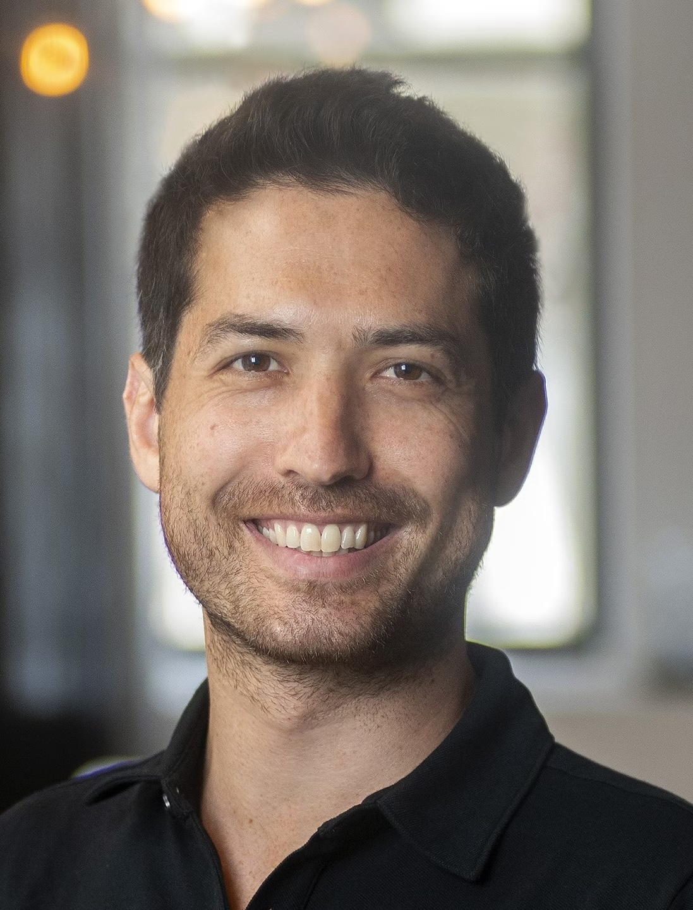

Alex Williams
New York University
& Flatiron Institute
David Lipshutz
Baylor College of Medicine
Jenelle Feather
Carnegie Mellon University
| Call for Abstracts | Speakers | Organizers | Schedule |
The Center for Computational Neuroscience (CCN) at the Flatiron Institute periodically organizes the Junior Theoretical Neuroscientist (JTN) workshop as an opportunity for selected postdocs and advanced PhD students to connect with the theoretical neuroscience community at the Flatiron Institute and the broader NYC area. In 2025, we expect to select roughly 12 trainees to participate in the workshop from June 26-27, to exchange ideas in an intimate, small group setting. The schedule will allow each participant to deliver a ~30 minute research talk and include extended breaks for discussions.
Our aim is to attract a group of talented theorists studying different topics and coming from diverse backgrounds. We expect the workshop will provide a particularly excellent opportunity for participants in the process of planning their next career stage. There is no charge to attend the workshop. Meals will be provided for attendees. Travel and hotel accommodations will be provided for non-local participants.
We invite applications from postdocs and PhD students working in theoretical/computational neuroscience, broadly defined.
Application Materials
Submission Deadline: April 7, 2025
Click Here to Submit an Application
|
Alex Williams New York University & Flatiron Institute |

David Lipshutz Baylor College of Medicine |
Jenelle Feather Carnegie Mellon University |